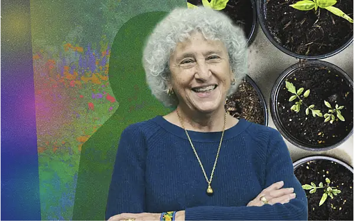

Annual Academic Conference
A gathering of emerging scholars and distinguished faculty to share, advance original research across disciplines.
Keynote & Guest Speaker
Leading voices across academia and industry joining us for keynotes, panel discussions, and invited lectures.

Student Presentations
All student abstracts and topics presented at the 2026 colloquium. Select a category below to read full summaries.
| Presenter | Topic | Category |
|---|---|---|
| Aidan McCauley | A-Z Mysteries: Medieval Madness | Literature & Textual Analysis |
| Aishwarya Somakandan | Donors, Doubts, & DMs: Social Media and Peer Influence on High School Students’ Blood Donation Attitudes | Health & The Body |
| Annalee Debenport | Named by Appearance: Investigating Sex Bias in Bird Names | Nature & Naming |
| Annika van der Wende and Mia Kimura | From 1886 to 2022: Avian Nomenclature Through Time | Nature & Naming |
| Ann-Mei Sun | Tracing Branches: Complex Branchhood and Resistance in Humanimal | Literature & Textual Analysis |
| Anoushka Vaidya | Inventing Spain: Competing Nationalism and the Imagined Community in the Spanish Civil War | Politics & Power |
| Anya Bhandari, Jack McCormick, and Paulene Tinio | Proximity as Power: How Education Shapes Political Opportunity | Education & Access |
| Chun Ning Andre Lo | The Enforcer: The Burden of A Dying Breed of Warriors | Identity & Culture |
| Claire d'Hont Finn | Who Controls Your Data?: The Value of Data Privacy to the Future of European Competitiveness on the Global Stage | Technology & Data |
| Clara Hagedorn | Digital Dominos: How US Sanctions Overlooked the Rise of Digital Authoritarianism in Venezuela | Politics & Power |
| Devyani Pandey | What does the use and effectiveness of music therapy in motor rehabilitation reveal about the nature of the mind-body relationship? | Health & The Body |
| Haseeb Haider | Redemption and Betrayal in The Kite Runner | Literature & Textual Analysis |
| Justin Liu | The Shaky Relationship: A Computational Sentiment Analysis of US Congressional Speeches Respecting Great Britain | Politics & Power |
| Makenzie Battle | The Duality of Me: An Autoethnography about the Complexity of Dual Identities | Identity & Culture |
| Matthew De Alba | ‘Have You Eaten Today?’ The Barriers of Food and Identity for NYU Students Trying to Find Themselves | Food & Campus Life |
| Maverick Fu | The Association Between Newly Enrolled Students’ Extracurricular Activities Participation and Their Sense of Belonging in International Secondary School in China | Education & Access |
| Minkyu Kim | Cultural Identity in Transit: Negotiating Authentic Selfhood Between Collectivist and Individualistic Frameworks | Identity & Culture |
| Nikhil Mallya | Artificial Intelligence's Advancement on Fragment Decoding | Technology & Data |
| Rebecca Tonetti | Understanding CTE and the Future of its Diagnosis | Health & The Body |
| Saylee Nemade | Beyond the Violet Pantry: Graduate Students & Food Insecurity | Food & Campus Life |
| Seema Anjali Sawh | Developing Beyond Oil: Guyana’s Path Between Norway’s Prudence and the Gulf’s Prosperity | Business & Food Insecurity |
| Siena Park and Emily Smukler | Analyzing the Dualities of Womanhood in Antiquity: A Comparative Study of Dido and Sita and their Respective Cultures | Business & Food Insecurity |
| Soleil Protos | cuerpos tejidos: the language between our bodies | Identity & Culture |
Browse by Topic
Select a category to explore student abstracts and full research summaries.